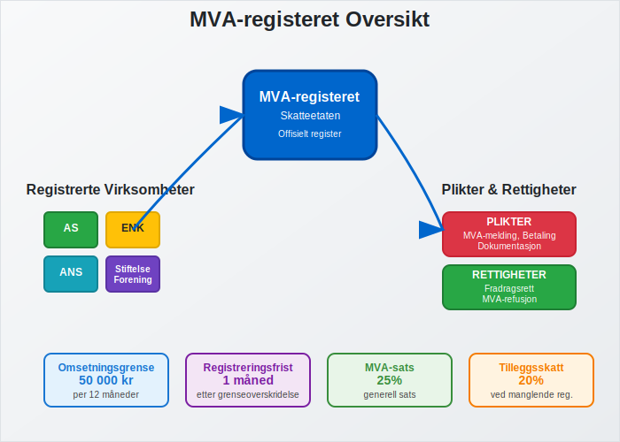
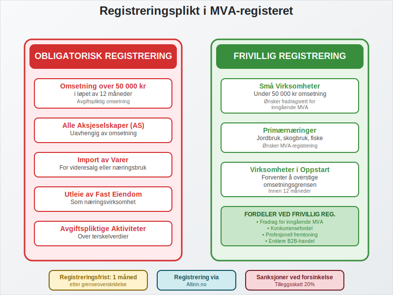
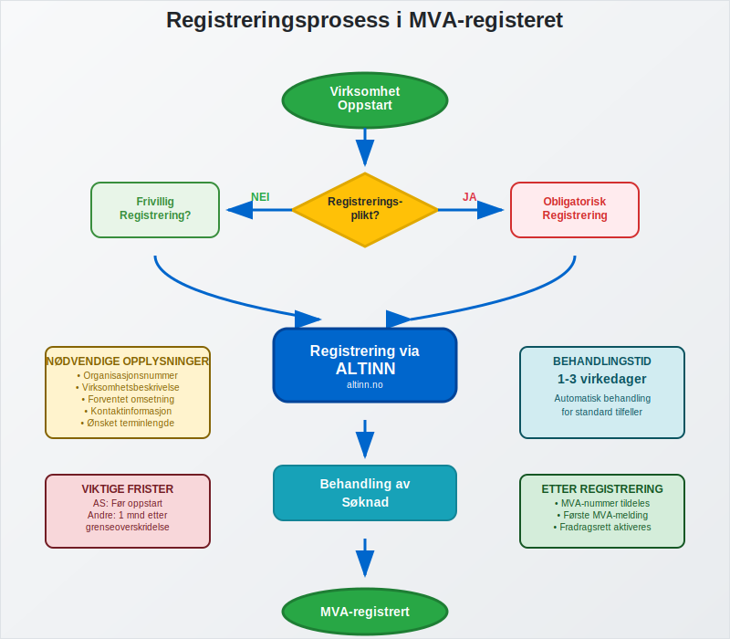
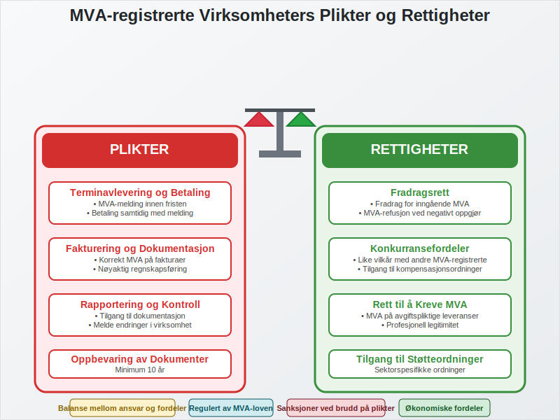
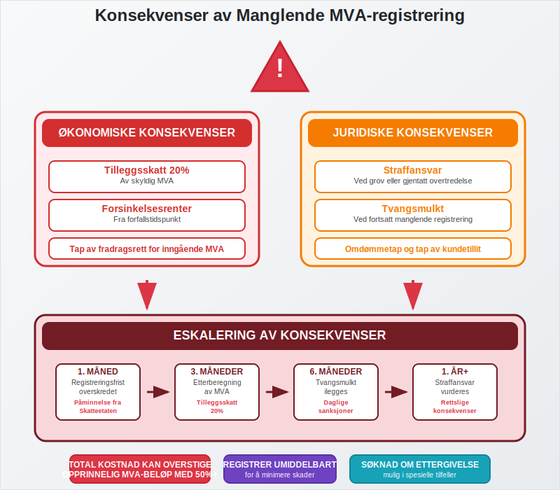
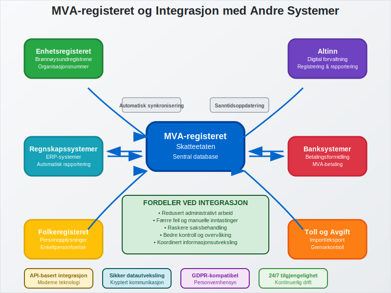

MVA-registeret er Skatteetatens offisielle register over alle virksomheter som er registrert for merverdiavgift i Norge. Registeret fungerer som grunnlaget for MVA-systemet og sikrer at alle avgiftspliktige virksomheter oppfyller sine forpliktelser overfor staten. For aksjeselskaper og andre selskapsformer er MVA-registrering ofte obligatorisk fra oppstart.
For en grundig innføring i Merverdiavgift, se vår hovedartikkel om MVA.

Hvem Må Registrere Seg i MVA-registeret?
Registreringsplikt i MVA-registeret avhenger av flere faktorer, hvor omsetningsgrensen er den viktigste. Virksomheter må registrere seg når de oppfyller bestemte kriterier for avgiftspliktig omsetning.
Obligatorisk Registrering
Følgende virksomheter må registrere seg i MVA-registeret:
- Virksomheter med omsetning over 50 000 kr i løpet av 12 måneder
- Alle aksjeselskaper uavhengig av omsetning
- Virksomheter som driver med avgiftspliktige aktiviteter som overstiger terskelverdiene
- Import av varer for videresalg eller bruk i næringsvirksomhet
- Utleie av fast eiendom når dette utgjør næringsvirksomhet

Frivillig Registrering
Noen virksomheter kan velge å registrere seg frivillig:
- Små virksomheter under 50 000 kr omsetning som ønsker fradragsrett for inngående MVA
- Primærnæringer som ønsker å være MVA-registrert
- Virksomheter i oppstartsfase som forventer å overstige omsetningsgrensen
Registreringsprosessen
Registrering i MVA-registeret skjer gjennom Altinn og er en del av den generelle virksomhetsregistreringen. Prosessen varierer avhengig av virksomhetstype og tidspunkt for registrering.
Registrering ved Oppstart
| Virksomhetstype | Registreringstidspunkt | Spesielle krav |
|---|---|---|
| Aksjeselskap | Før oppstart av virksomhet | Obligatorisk uavhengig av omsetning |
| Enkeltpersonforetak | Innen 1 måned etter oppstart | Kun hvis omsetning > 50 000 kr |
| Ansvarlig selskap | Før oppstart av virksomhet | Avhenger av planlagt omsetning |
| Stiftelse/Forening | Ved avgiftspliktig aktivitet | Kun for avgiftspliktige aktiviteter |
Registrering Underveis i Drift
Virksomheter som ikke var registreringspliktige ved oppstart, men som senere overstiger omsetningsgrensen, må registrere seg innen 1 måned etter at grensen er overskredet.

Plikter og Rettigheter
MVA-registrering medfører både plikter og rettigheter som virksomheten må forholde seg til. Disse er regulert i merverdiavgiftsloven og påvirker den daglige driften betydelig.
Hovedplikter for MVA-registrerte Virksomheter
Terminavlevering og Betaling:
- Levere MVA-melding innen fristen (vanligvis den 10. i måneden etter terminen)
- Betale skyldig MVA samtidig med innlevering av melding
- Oppbevare dokumentasjon i minimum 10 år
Fakturering og Dokumentasjon:
- Utstede fakturaer med korrekt MVA-behandling
- Føre nøyaktig regnskap over alle transaksjoner
- Dokumentere alle inn- og utgående MVA-poster
Rapportering og Kontroll:
- Gi Skatteetaten tilgang til regnskaper og dokumentasjon ved kontroll
- Melde endringer i virksomheten som påvirker MVA-registreringen
- Følge gjeldende regnskapsregler og bokføringsplikt
Rettigheter for MVA-registrerte Virksomheter
Fradragsrett:
- Fradrag for inngående MVA på innkjøp til virksomheten
- Refusjon av MVA ved negativt MVA-oppgjør
- Fradrag for MVA på anleggsmidler og driftskostnader
Konkurransefordeler:
- Mulighet til å konkurrere på like vilkår med andre MVA-registrerte virksomheter
- Tilgang til MVA-kompensasjonsordninger for enkelte sektorer
- Rett til å kreve MVA av kunder på avgiftspliktige leveranser

MVA-Terminer og Rapportering
MVA-registrerte virksomheter må rapportere og betale MVA i henhold til fastsatte terminer. Terminlengden avhenger av virksomhetens størrelse og type.
Terminoversikt
| Termintype | Omsetningsgrense | Rapporteringsfrekvens | Betalingsfrist |
|---|---|---|---|
| Månedstermin | Over 5 mill. kr | Hver måned | 10. i påfølgende måned |
| Tomonederstermin | 1-5 mill. kr | Annenhver måned | 10. i påfølgende måned |
| Årstermin | Under 1 mill. kr | Én gang per år | 10. mai påfølgende år |
Spesielle Terminer
- Sesongvirksomheter kan få tilpassede terminer
- Nyetablerte virksomheter starter ofte med månedstermin
- Virksomheter med variabel omsetning kan søke om terminendring
Konsekvenser av Manglende Registrering
Å unnlate å registrere seg i MVA-registeret når man er pliktig til det, kan få alvorlige konsekvenser både økonomisk og juridisk.
Økonomiske Konsekvenser
Tilleggsskatt og Renter:
- Tilleggsskatt på 20% av skyldig MVA
- Forsinkelsesrenter fra forfallstidspunkt
- Tap av fradragsrett for inngående MVA i perioden før registrering
Etterberegning:
- Skatteetaten kan kreve MVA for hele perioden virksomheten skulle vært registrert
- Ingen fradrag for inngående MVA i ikke-registrert periode
- Mulige forsinkelsesgebyrer på fakturaer
Juridiske Konsekvenser
- Straffansvar ved grov eller gjentatt overtredelse
- Mulig tvangsmulkt ved fortsatt manglende registrering
- Problemer med leverandørforhold og kundetillit

Avregistrering fra MVA-registeret
Virksomheter kan avregistrere seg fra MVA-registeret når de ikke lenger oppfyller registreringskravene eller ved opphør av virksomheten.
Når Kan Man Avregistrere Seg?
- Omsetning under 50 000 kr i 12 måneder og forventes å forbli under grensen
- Opphør av virksomhet eller avgiftspliktig aktivitet
- Endring av virksomhetsform som ikke krever MVA-registrering
- Salg eller overdragelse av virksomheten
Avregistreringsprosess
- Søknad om avregistrering via Altinn
- Innlevering av siste MVA-melding med sluttoppgjør
- Dokumentasjon av årsak til avregistrering
- Oppgjør av eventuell restskatt eller krav på refusjon
Sammenheng med Andre Registre
MVA-registeret er tett integrert med andre offentlige registre og påvirker virksomhetens forhold til flere myndigheter.
Integrasjon med Enhetsregisteret
Se vår detaljerte artikkel om Enhetsregisteret for full oversikt over registerets formål og innhold.
- Automatisk kobling til organisasjonsnummer i Enhetsregisteret
- Oppdatering av virksomhetsinformasjon reflekteres i begge registre
- Koordinert behandling av endringer og avregistreringer
Påvirkning på Regnskapsføring
MVA-registrering påvirker hvordan virksomheten må føre regnskap:
- Krav til MVA-spesifikasjon i regnskapet
- Separate konti for utgående og inngående MVA
- Månedlig avstemming av MVA-konti mot MVA-melding
- Dokumentasjonskrav for alle MVA-relaterte transaksjoner

Digitalisering og Fremtidige Endringer
MVA-systemet gjennomgår kontinuerlig modernisering for å forenkle prosessene for både virksomheter og myndigheter.
Pågående Digitaliseringstiltak
- Automatisk rapportering fra kassasystemer og regnskapssystemer
- Sanntidsrapportering for store virksomheter
- Forbedret integrasjon med ERP-systemer
- Kunstig intelligens for automatisk kontroll og validering
Planlagte Endringer
- Reduserte rapporteringsfrister for enkelte virksomhetstyper
- Utvidet bruk av elektronisk fakturering og automatisk MVA-beregning
- Strengere krav til dokumentasjon og sporbarhet
- Økt fokus på internasjonale transaksjoner og grensehandel
Praktiske Tips for MVA-registrerte Virksomheter
For å sikre korrekt håndtering av MVA-forpliktelser, bør virksomheter følge etablerte beste praksis.
Månedlige Rutiner
- Avstem MVA-konti mot hovedbok hver måned
- Kontroller fakturaer for korrekt MVA-behandling
- Forbered MVA-melding i god tid før fristen
- Sett av midler til MVA-betaling
Årlige Kontroller
- Gjennomgå registreringsstatus og vurder behov for endringer
- Kontroller fradragsrett for større anskaffelser
- Vurder terminlengde basert på omsetningsutvikling
- Oppdater rutiner i henhold til regelverksendringer
Dokumentasjon og Arkivering
- Oppbevar alle MVA-relaterte dokumenter i minimum 10 år
- Organiser dokumentasjon for enkel tilgang ved kontroller
- Sikkerhetskopier av elektroniske regnskapsdata
- Regelmessig oppdatering av regnskapssystemer og rutiner
MVA-registeret er en hjørnestein i det norske skattesystemet og krever nøye oppmerksomhet fra alle registrerte virksomheter. Ved å forstå kravene og følge etablerte rutiner, kan virksomheter sikre korrekt håndtering av sine MVA-forpliktelser og unngå kostbare feil og sanksjoner.